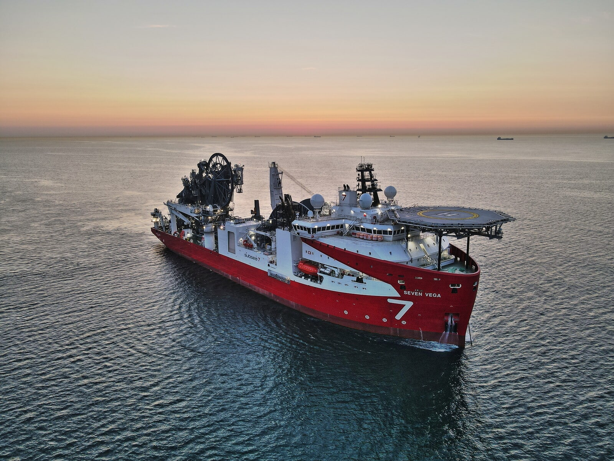

Sensorer
Måling på konstruksjonen, montert for forholdene.

havvind · Norge
4Subsea leverer strukturell tilstandsovervåking av vindturbiner under installasjon og drift, med sensorer og analyse.
Ny mulighet
I dag leses tilstand i rapporter, og avvik oppdages når noe allerede har skjedd. En side der ingeniøren ser belastning mot grense per turbin, med varsel når marginen krymper, flytter arbeidet fra reparasjon til planlegging.
Varsel før grensen er nådd, ikke etter
Slik jobber vi
Hva som skal overvåkes, og hvilke grenser som gjelder.
Sensorer monteres og kobles til.
Data og varsler, med rapportering.
Om oss
4Subsea leverer strukturell tilstandsovervåking av vindturbiner under installasjon og drift, med sensorer og analyse.
«Godt håndverk merkes ikke. Det er poenget.»
Tjenester
Måling på konstruksjonen, montert for forholdene.
Data bearbeidet til noe ingeniøren kan bruke.
Tilstand gjennom installasjon og drift.
Hva som bør måles, og hvorfor.
Kontakt